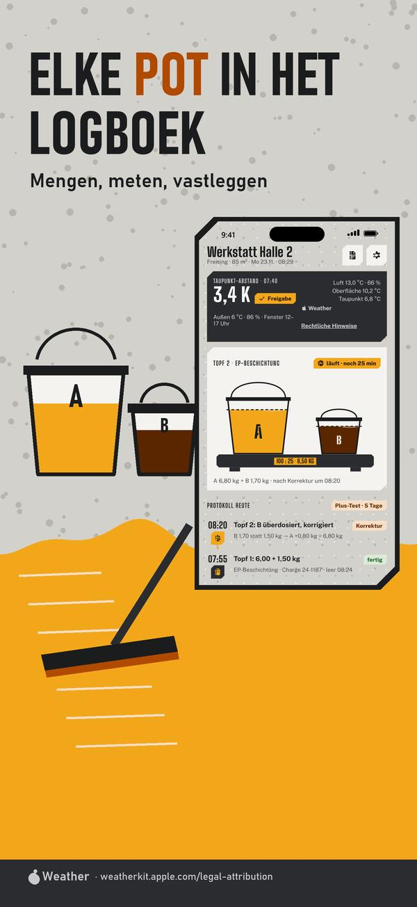
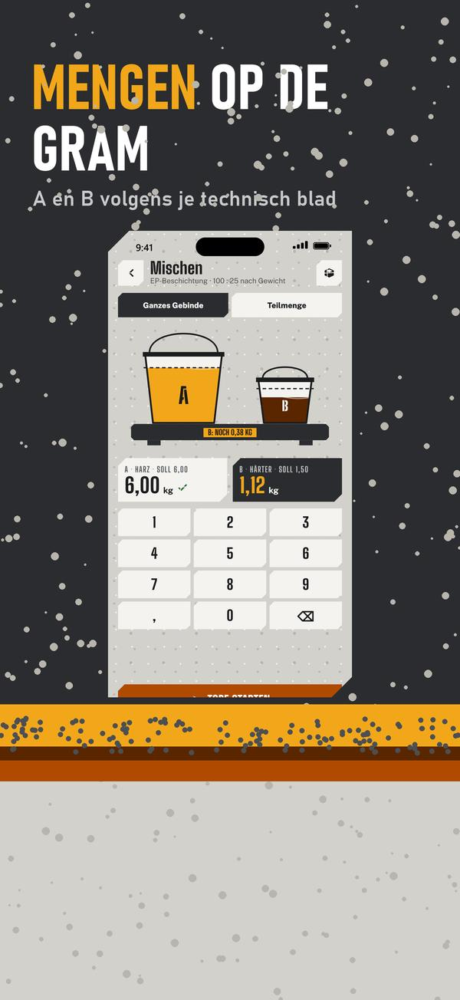
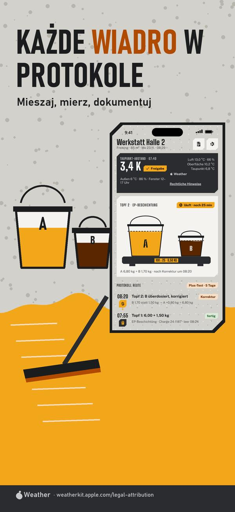
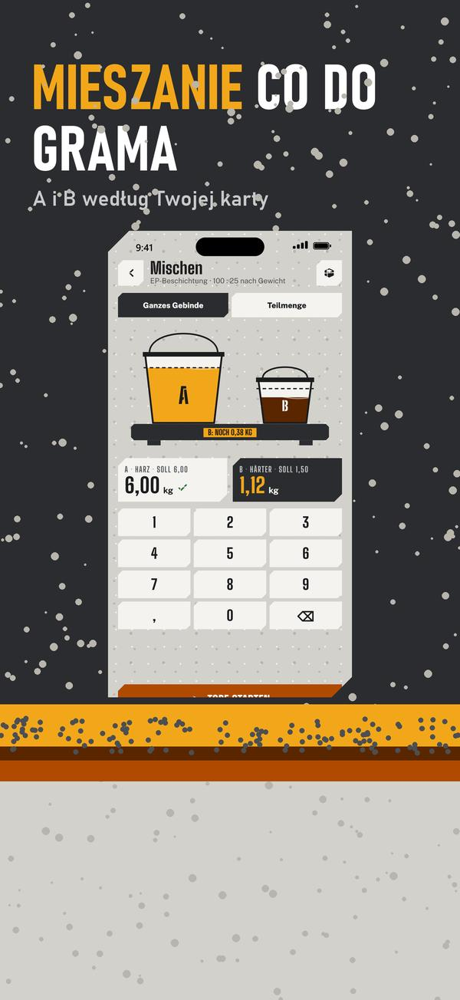
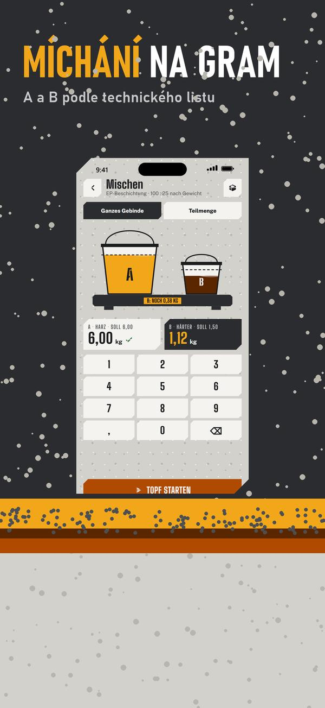

Topfzeit ist das Werkzeug für Epoxid-, PU- und 3K-Bodenbeschichtungen. Du trägst die Werte aus deinem Datenblatt ein – Mischungsverhältnis, Topfzeit, Verbrauch, Wartezeiten – und Topfzeit rechnet auf der Baustelle mit: wie viel A und B für das ganze Gebinde oder eine Teilmenge, was zu tun ist, wenn eine Komponente überdosiert wurde, ob die Oberfläche mindestens 3 K über dem Taupunkt liegt und wann die nächste Schicht kommen darf.
Mischen nach Gewicht oder Volumen, ganzes Gebinde oder Teilmenge, auch A : B : C
Korrektur: zu viel B gegossen? Topfzeit sagt, wie viel A dazukommt
Topfzeit-Timer mit Live-Aktivität und Temperatur-Faustregel
Taupunkt nach Magnus: Luft, Feuchte, Oberfläche, Abstand ≥ 3 K
Außenwetter und 24-Stunden-Fenster für unbeheizte Hallen und Außenflächen
Verbrauch je Schicht: kg/m², Gebinde, Quarzsand, Nassfilm
Wartezeiten zwischen den Schichten mit Wecker
Ausführungsprotokoll als PDF mit Bedingungen, Chargen und Fotos
Topfzeit is het gereedschap voor epoxy-, PU- en 3K-vloercoatings. Je vult de waarden uit je technisch blad in – mengverhouding, verwerkingstijd, verbruik, wachttijden – en Topfzeit rekent op de bouwplaats mee: hoeveel A en B voor de hele verpakking of een deel, wat te doen als een component te veel is gegoten, of de ondergrond minstens 3 K boven het dauwpunt ligt en wanneer de volgende laag mag.


Mengen op gewicht of volume, hele verpakking of deel, ook A : B : C
Correctie: te veel B gegoten? Topfzeit zegt hoeveel A erbij moet
Verwerkingstimer met live-activiteit en vuistregel voor temperatuur
Dauwpunt volgens Magnus: lucht, vocht, ondergrond, marge ≥ 3 K
Buitenweer en 24-uursvenster voor onverwarmde hallen en buitenvloeren
Verbruik per laag: kg/m², verpakkingen, kwartszand, natte laag
Wachttijden tussen lagen met wekker
Uitvoeringsrapport als pdf met omstandigheden, charges en foto's
Topfzeit to narzędzie do posadzek epoksydowych, poliuretanowych i 3K. Wpisujesz wartości z karty technicznej – proporcje, czas przydatności, zużycie, przerwy technologiczne – a Topfzeit liczy na budowie: ile A i B na całe opakowanie lub część, co zrobić, gdy wlano za dużo jednego składnika, czy podłoże jest co najmniej 3 K powyżej punktu rosy i kiedy można nałożyć kolejną warstwę.


Mieszanie wagowo lub objętościowo, całe opakowanie lub część, także A : B : C
Korekta: za dużo B? Topfzeit podaje, ile A dodać
Minutnik czasu przydatności z aktywnością na żywo i zasadą temperatury
Punkt rosy wg Magnusa: powietrze, wilgotność, podłoże, odstęp ≥ 3 K
Pogoda na zewnątrz i okno 24 h dla nieogrzewanych hal i powierzchni zewnętrznych
Zużycie na warstwę: kg/m², opakowania, piasek kwarcowy, mokra warstwa
Przerwy między warstwami z przypomnieniem
Protokół wykonania w PDF z warunkami, partiami i zdjęciami
Topfzeit je nástroj pro epoxidové, polyuretanové a 3K podlahy. Zadáš hodnoty z technického listu – mísicí poměr, dobu zpracovatelnosti, spotřebu, čekací doby – a Topfzeit počítá na stavbě s tebou: kolik A a B na celé balení nebo jeho část, co dělat, když se přelije jedna složka, zda je podklad aspoň 3 K nad rosným bodem a kdy smí přijít další vrstva.

Míchání podle hmotnosti nebo objemu, celé balení nebo část, i A : B : C
Korekce: přelité B? Topfzeit řekne, kolik A přidat
Časovač doby zpracovatelnosti s živou aktivitou a teplotním pravidlem
Rosný bod podle Magnuse: vzduch, vlhkost, podklad, odstup ≥ 3 K
Venkovní počasí a 24hodinové okno pro nevytápěné haly a venkovní plochy
Spotřeba na vrstvu: kg/m², balení, křemičitý písek, mokrá vrstva
Čekací doby mezi vrstvami s budíkem
Protokol o provedení v PDF s podmínkami, šaržemi a fotkami